Comment pouvons-nous t’aider à vendre sur Vinted ?
Des guides pas à pas pour installer Nova, régler chaque fonction et débloquer les situations courantes.
Premiers pas avec Nova
Nova est une extension gratuite pour Chrome et Brave qui t’aide à vendre et acheter sur Vinted, plus une appli téléphone.
- Installe l’extension
Depuis le Chrome Web Store (aussi pour Brave). Épingle l’icône Nova dans la barre du navigateur.
- Crée ton compte Nova
Gratuit, sans carte bancaire. Il relie ton PC, tes navigateurs et ton téléphone. Le plus simple : « Se connecter via le site ».
- Ajoute ta clé API Claude
Elle sert à l’IA (annonces, réponses, négociation). Elle est gardée dans ton compte Nova.
- Ouvre vinted.fr
Connecte-toi à ton compte Vinted : Nova utilise ta session, jamais ton mot de passe Vinted.
Dois-je laisser mon ordinateur allumé ?
Nova travaille dans ton navigateur : les automatismes tournent tant que le PC est allumé avec Chrome ou Brave ouvert.
- Ce qui a besoin du PC
Réponses automatiques, favoris, republication, Auto-buy, bordereaux, sauvegardes : tout ce qui agit sur Vinted.
- Ce qui marche PC éteint
Sur le téléphone : estimation de prix en brocante, consultation des derniers chiffres. Les actions envoyées depuis le téléphone partent dès que le PC se rallume.
- Garder le PC éveillé
Réglages → « Garder le PC éveillé » empêche la mise en veille pendant que les automatismes tournent.
Connecter plusieurs comptes Vinted
La règle : un profil de navigateur par compte Vinted, pour que chaque compte reste bien séparé.
- Un profil par compte
Sur Chrome ou Brave, chaque profil est une session séparée (cookies, extensions). Crée un profil par compte Vinted.
- Créer un profil
Clique sur la photo de profil du navigateur, puis « Ajouter » (ou chrome://settings / brave://settings). Une nouvelle fenêtre s’ouvre.
- Installer Nova dans ce profil
Même lien du Chrome Web Store, puis connecte-toi au même compte Nova et à ton autre compte Vinted.
- Brave : baisse le bouclier
Le bouclier (Shields) de Brave peut bloquer les échanges avec Vinted : clique sur l’icône lion sur vinted.fr et mets Shields sur « Down », puis recharge.
- Tout sur le téléphone
Tous tes navigateurs reliés apparaissent dans l’appli, et « Appliquer à mes autres navigateurs » copie tes réglages.
Se connecter via le site
Le site remplit ton e-mail et ton mot de passe enregistrés, et te reconnaît si tu étais déjà connecté.
- « Se connecter via le site »
Au démarrage de Nova (ou si tu as été déconnecté), clique sur le bouton bleu.
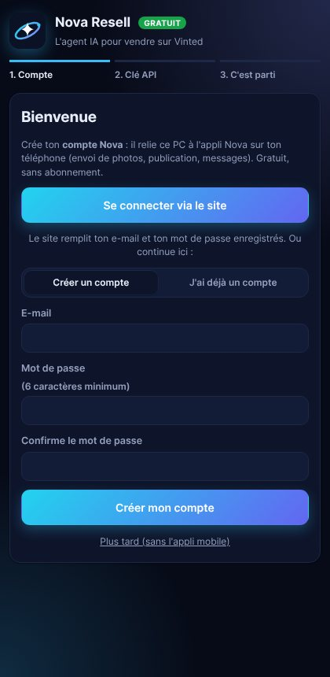
- Connecte-toi
Ton navigateur propose ton e-mail et ton mot de passe enregistrés : un clic suffit.
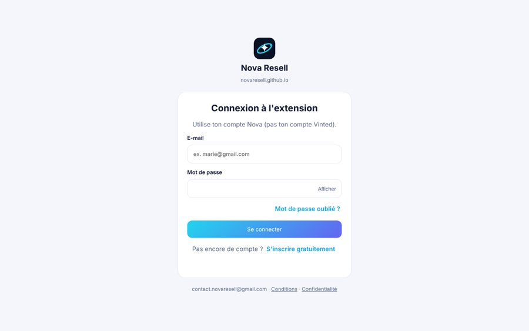
- Compte reconnu
Si tu étais déjà connecté avant, le site te reconnaît : il suffit de confirmer avec ton mot de passe.
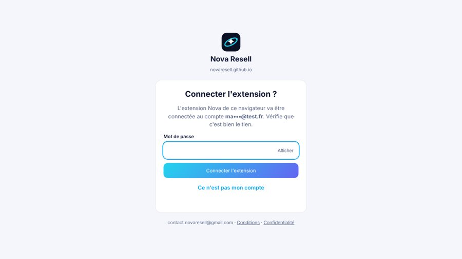
Auto-buy : filtres et alertes
Nova surveille tes recherches Vinted et te prévient dès qu’un article sort.
- Ouvre l'onglet Auto-buy
Dans Nova, onglet Auto-buy (menu Plus si l'écran est étroit), puis « + Ajouter un filtre ».
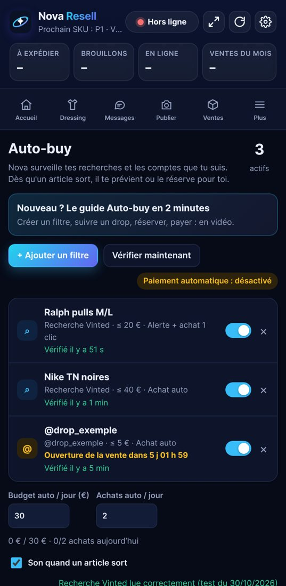
- Colle ta recherche Vinted
Sur vinted.fr, fais ta recherche avec tes filtres (marque, taille, prix), copie l'adresse de la page et colle-la ici.
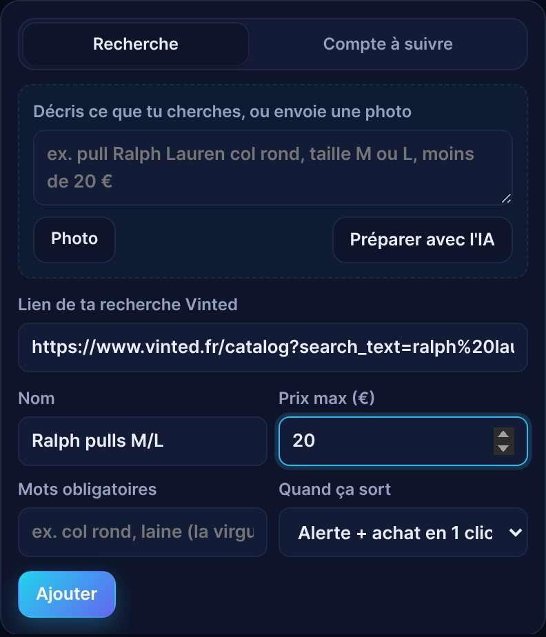
- Ou décris, ou envoie une photo
Écris ce que tu cherches ou ajoute une photo de l'article : l'IA prépare la recherche toute seule.
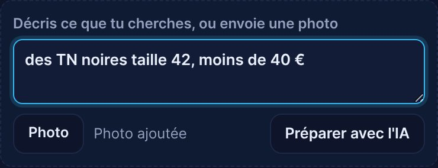
- Vérifie et ajoute
Prix max, mots obligatoires (la virgule veut dire « ou ») et ce que Nova fait quand ça sort : alerte ou achat automatique.
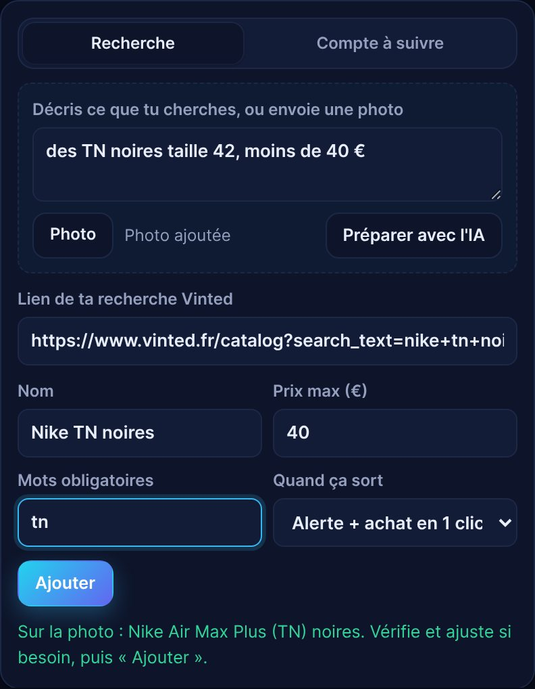
- Un article sort
Tu reçois une notification sur le PC et le téléphone. La carte montre le prix habituel et ta marge estimée.
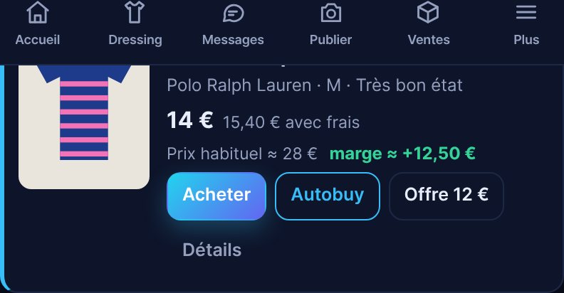
- Aussi sur ton téléphone
Le même fil arrive dans l'appli Nova : « Acheter » réserve l'article sur ton PC en un geste.
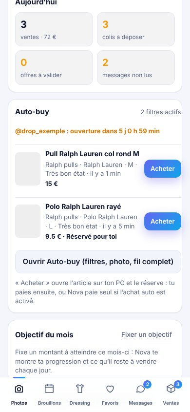
Suivre une vente programmée
Un vendeur ouvre sa vente à une heure précise ? Nova se réveille pile à l’ouverture.
- Ajoute le compte
« Compte à suivre » : colle le lien du profil (vinted.fr/member/…). Choisis le prix max et le nombre d'articles.
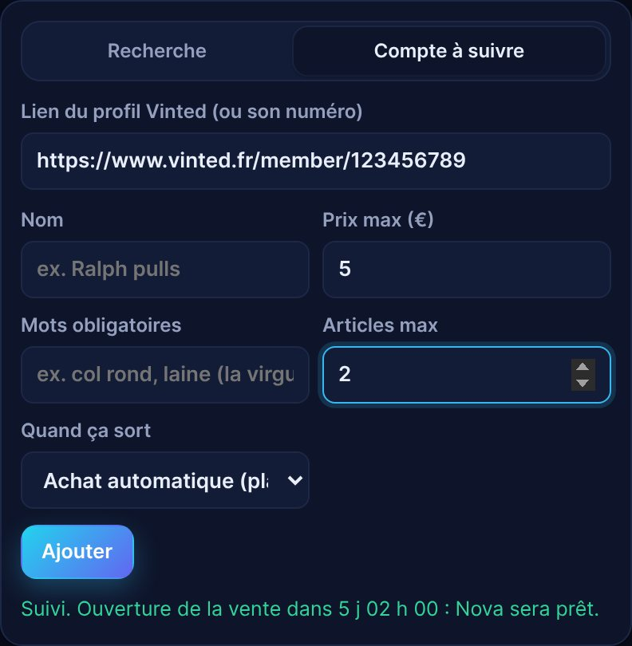
- Le compte à rebours s'affiche
Nova lit l'heure d'ouverture de la vente et prépare un réveil à la seconde près.
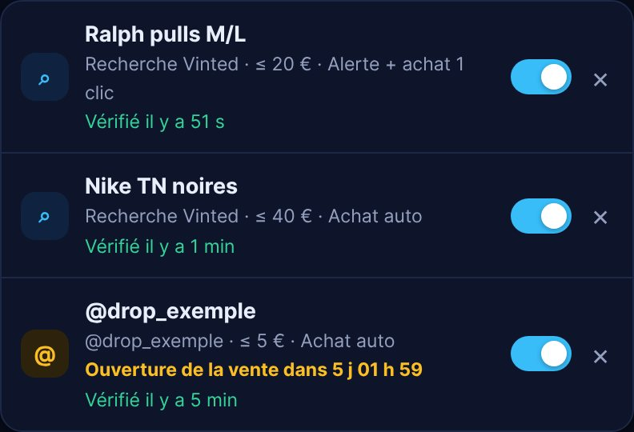
- Fixe tes limites
Budget et nombre d'achats automatiques par jour : Nova ne les dépasse jamais.
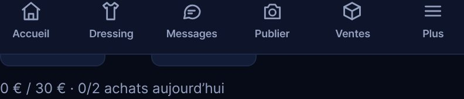
- À l'ouverture
2 minutes avant, les autres automatismes se mettent en pause. À l'heure dite, Nova réserve (ou achète) dans tes limites, sans aller plus vite que le rythme sûr.
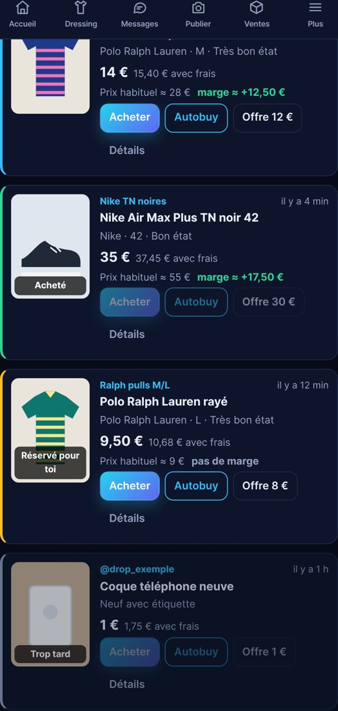
Achat test et paiement automatique
Vérifie une fois, sur un petit article, que Nova sait payer tout seul.
- Choisis un petit article
Un article à 10 € maximum qui t'intéresse vraiment : il sera acheté pour de vrai. Colle son lien et son prix.
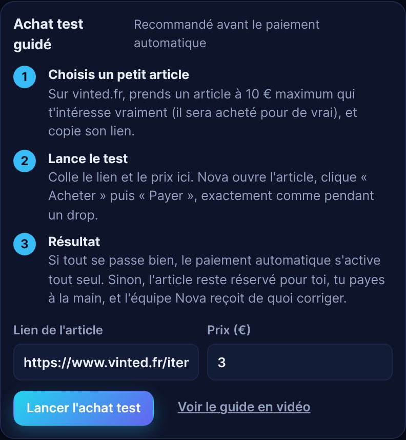
- Regarde Nova faire
Nova ouvre l'article, clique « Acheter » (l'article est bloqué pour toi), puis « Payer ».

- Paiement auto activé
Si tout s'est bien passé, la case « Autoriser Nova à cliquer Payer » se coche toute seule. Tu peux la décocher à tout moment.
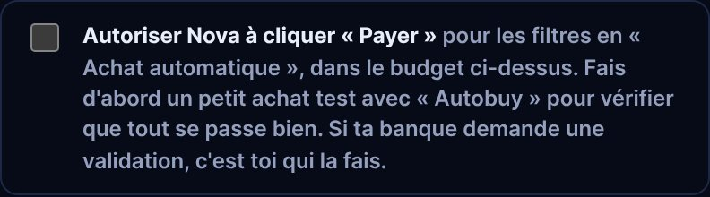
- Si ta banque demande une validation
Valide dans ton appli bancaire. Si Nova ne trouve pas le bouton, l'article reste réservé : tu payes à la main et l'équipe corrige.

Messages et offres aux favoris
Quand quelqu’un met ton article en favori, Nova lui envoie ton message avec une offre s’il le faut.
- Écrire le message
Onglet Favoris. Variables : {pseudo}, {article}, {prix}, {prix_remise}, {remise}. Plusieurs versions possibles : Nova en tire une au hasard et te montre laquelle vend le mieux.
- Régler l’offre
En % ou en €. Arrondi automatique (10 centimes sous 15 €, 50 centimes jusqu’à 25 €, l’euro au-delà), jamais sous la moitié du prix ni sous 1 €.
- Messages selon le contexte
Un message pour le soir, le week-end, ou les articles chers. Un message dédié aux lots quand un acheteur aime plusieurs articles.
- Rythme
Délai avant envoi (jusqu’à 7 jours) et nombre maximum de nouveaux messages par heure. Pas de message si une conversation existe déjà avec l’acheteur.
Republier ses annonces
Remettre une annonce en tête des résultats, à la main ou automatiquement.
- Sélectionner
Onglet Dressing : coche les annonces (recherche par titre ou SKU, « #A12 » pour un SKU exact).
- Options
Baisse de prix, réécriture IA du titre ou de la description (3 intensités), créer en brouillon, pause entre deux annonces.
- Programmer
Dans 10 min, demain 9 h, samedi 19 h… jusqu’à 30 jours à l’avance. Tout apparaît dans Journal → À venir.
- Rester prudent
Au-delà d’une trentaine de republications par jour et par compte, Vinted peut limiter le compte : Nova te prévient.
Bordereaux en 1 clic
Tous tes bordereaux dans un seul PDF, prêt à imprimer.
- Depuis Vinted
Sur ta page Commandes, un bouton « Bordereaux (Nova) » ouvre directement l’onglet Ventes.
- Choisir le format
Imprimante thermique 100 × 150 mm (recadrage automatique) ou A4.
- Texte en haut
SKU, titre, dernier mot du titre, ou pseudo de l’acheteur, dans une bande qui ne couvre jamais l’étiquette.
Sauvegarder et transférer ses annonces
Textes, prix et photos d’origine gardés dans ton compte Nova, pour les recréer ou les transférer sur un autre compte.
- Lancer une sauvegarde
Sur ton dressing Vinted, bouton « Sauvegardes (Nova) », puis « Sauvegarder les annonces du compte actuel ». Une barre de progression s’affiche.
- Sauvegarde automatique
Les nouvelles annonces sont sauvegardées une fois par jour. Les annonces vendues ou supprimées restent dans la sauvegarde.
- Transférer
Connecte-toi au compte de destination (même dans un autre navigateur), ouvre Sauvegardes et clique « Recréer ici » : en brouillons ou publiées, une par une, à rythme espacé.
Stock auto
Pour un article que tu as en plusieurs exemplaires : à chaque vente, Nova remet un exemplaire en vente.
- Activer
Dressing → coche l’annonce → Actions sur la sélection → Stock auto : indique la quantité.
- Arrêter
Mets la quantité à 1.
Demande à Nova
Pose une question sur tes ventes en langage courant : Nova répond avec tes vrais chiffres.
- Où
Accueil → « Demande à Nova ».
- Exemples
Quelle marque me rapporte le plus ? Quels articles dorment depuis 60 jours ? Combien j’ai gagné ce mois-ci ?
- Données utilisées
Tes ventes, ton stock (prix d’achat) et ton dressing. Ouvre l’onglet Dressing pour inclure tes annonces en ligne.
Retours et litiges
Sur le téléphone, l’onglet Retours montre où est le colis, son suivi et le point relais où le récupérer.
- Suivi
Étapes du transporteur, date d’arrivée estimée et lien de suivi.
- Point relais
Nom, adresse, horaires, carte et bouton Itinéraire.
- Notification
Tu es prévenu (téléphone, PC, Discord) dès que le colis retour est arrivé.
Réponses automatiques
L’IA répond aux questions courantes (envoi, mesures, état, authenticité) et te rend la main quand elle n’est pas sûre.
- Régler
Onglet Réponses auto : tes infos, la personnalité, tutoiement ou vouvoiement, la liberté laissée à l’IA.
- Mémoire
Ajoute les infos que l’IA ne peut pas deviner (réservation, photos en plus, provenance).
- Questions en attente
Quand l’IA ne sait pas, la question t’attend : ta réponse est mémorisée pour la suite.
Négociation automatique
Nova répond aux offres selon tes paliers : accepte au-dessus de ton prix minimum, contre-offre en dessous.
- Paliers
La baisse maximale par tranche de prix, jamais plus de la moitié du prix.
- Rythme
Une contre-offre à 50 %, puis 80 % de la baisse max, puis ton dernier prix.
Vérification anti-robot Vinted
Que faire si Vinted demande de prouver que tu n’es pas un robot.
- Tout s'arrête tout seul
Nova met tous les automatismes en pause et t'explique la cause probable.
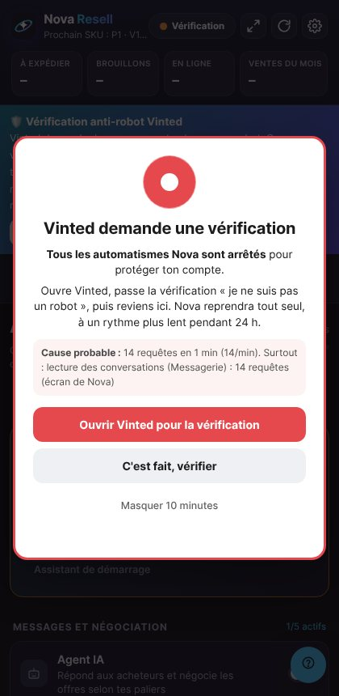
- Passe la vérification
Ouvre vinted.fr et fais la vérification toi-même. Nova ne la contourne jamais.
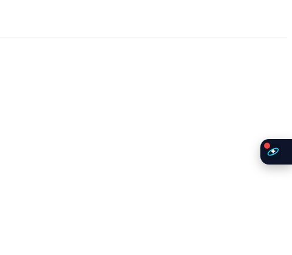
- Reprise automatique
Clique « C'est fait, vérifier » : Nova reprend, plus lentement pendant 24 h pour protéger ton compte.
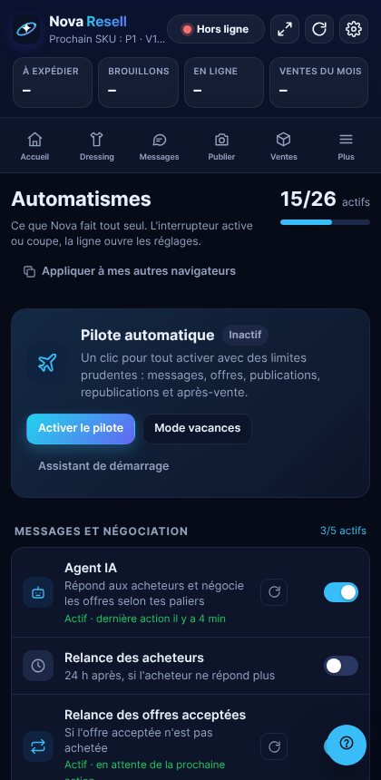
« Vinted ne répond pas » ou « message channel closed »
La page Vinted utilisée par Nova a changé pendant une action (tu naviguais dans cet onglet, ou il s’est rechargé).
- Rien à faire
Nova réessaie seul, et passe sur son propre onglet Vinted épinglé pour ne pas te gêner.
- Si ça continue
Ferme les onglets Vinted, rouvre vinted.fr, puis Réglages → Diagnostic → « Tester ».
Installer l’appli téléphone
Scanne le QR code sur le site ou ouvre novaresell.github.io/nova-resell sur ton téléphone.
- iPhone
Safari → Partager → « Sur l’écran d’accueil », puis ouvre Nova depuis l’icône.
- Android
Chrome → menu → « Installer l’application ».
- Notifications
Dans l’appli : Réglages → Activer les notifications, puis choisis les types d’alertes.
Alertes Discord
Reçois les alertes Nova dans un salon Discord.
- Créer un webhook
Paramètres du salon → Intégrations → Webhooks → Nouveau → Copier l’URL.
- Le coller dans Nova
Réglages → Compte → Alertes Discord → Enregistrer, puis Tester.
Nova est gratuit
Toutes les fonctions sont gratuites pour le moment, sans carte bancaire. L’IA utilise ta propre clé API Claude : tu paies directement ce que tu consommes (quelques centimes).
Aucun guide ne correspond. Essaie un autre mot, ou écris-nous.